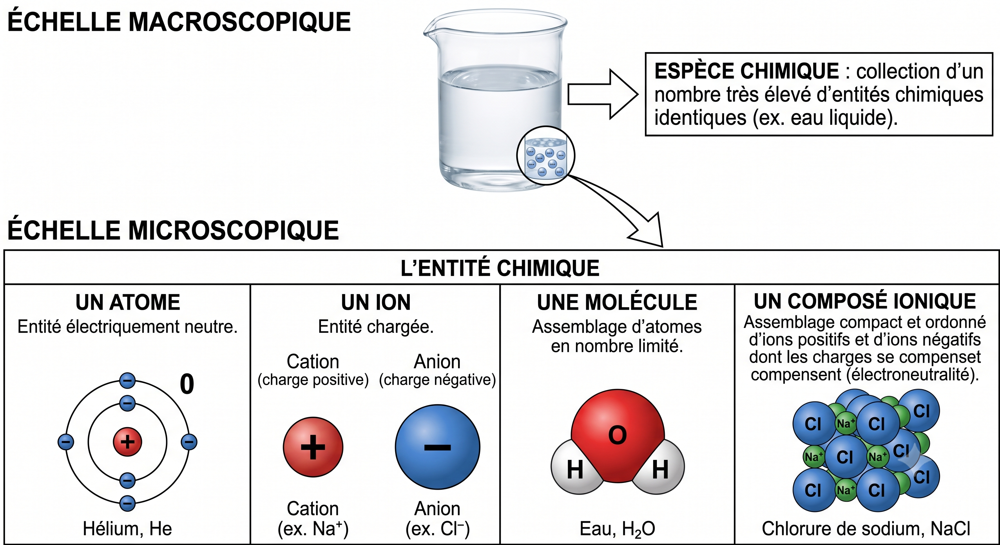

1. Du macroscopique au microscopique, de l'espèce chimique à l'entité
Définitions à retenir
- un atome : entité électriquement neutre,
- un ion : entité chargée positivement (cation) ou négativement (anion),
- une molécule : assemblage d'atomes en nombre limité,
- un composé ionique : assemblage compact et ordonné d'ions positifs et d'ions négatifs dont les charges se compensent (électroneutralité).

À toi de jouer
Pour chaque formule, indique s'il s'agit d'un atome, d'une molécule, d'un cation ou d'un anion (ou d'un composé ionique) :
| Formule | Ta réponse |
|---|---|
| Fe | |
| H₂O | |
| Na⁺ | |
| Cl⁻ | |
| NaCl (solide) |
2.a — Composition de l'atome
« Tous les corps sont constitués de particules très petites et indivisibles : les atomes. » — Dalton (1766-1844)
Fin du XIXe siècle : l'atome n'est pas indivisible (Rutherford, 1911).
Ordres de grandeur
Ordre de grandeur de la taille d'un atome :
Ordre de grandeur de la taille du noyau :
Rapport : 10⁻¹⁰ / 10⁻¹⁵ = 10⁵. Le noyau est environ 100 000 fois plus petit que l'atome.
Comparer les deux tailles (utiliser un quotient et l'écriture scientifique) :
Le rapport (taille atome) / (taille noyau) vaut environ :
Donc le noyau est environ … fois plus petit que l'atome :
Comment est constitué l'atome ?
L'atome est électriquement neutre : il possède donc autant de charges négatives que de charges positives, soit autant de protons que d'électrons.
2 protons + 2 neutrons dans le noyau
Tableau des caractéristiques des particules
| Particule | Masse | Charge électrique |
|---|---|---|
| 1,673 × 10⁻²⁷ kg | q = +e = +1,602 × 10⁻¹⁹ C | |
| 1,675 × 10⁻²⁷ kg | 0 | |
| 9,109 × 10⁻³¹ kg | q = −e = −1,602 × 10⁻¹⁹ C |
Neutron : mneutron = 1,675 × 10⁻²⁷ kg, q = 0
Électron : mélectron = 9,109 × 10⁻³¹ kg, q = −e
Remarque : ne pas confondre la charge électrique élémentaire e et le symbole de l'électron e⁻.
Représentation symbolique d'un noyau
Un atome est représenté par le symbole suivant :
AZX
- X : symbole de l'atome
- A : nombre de nucléons ou nombre de masse (neutrons + protons), placé en haut
- Z : numéro atomique (nombre de protons dans le noyau), placé en bas
Comment trouver le nombre de neutrons dans un noyau ?
Exemple 1 : Un atome de phosphore (symbole P) possède 31 nucléons et 15 protons. Écrire la représentation symbolique de son noyau :
Notation : P
Exemple 2 : Le noyau d'un atome d'aluminium a pour notation symbolique 2713Al. Écrire la composition de cet atome :
Nombre de protons :
Nombre d'électrons :
Nombre de neutrons :
Élément chimique et isotopes
Application : donner les compositions chimiques des ions phosphore (P⁻) et aluminium (Al³⁺) :
Ion P⁻ (le noyau de phosphore a pour notation 3115P) — protons : · neutrons : · électrons :
Ion Al³⁺ (le noyau d'aluminium a pour notation 2713Al) — protons : · neutrons : · électrons :
Al³⁺ (Z=13) : 13 protons, 14 neutrons (A=27, donc N=A−Z=14), mais seulement 10 électrons (3 électrons perdus pour former le cation).
Si le nombre de neutrons change mais que le nombre de protons reste le même, l'élément chimique reste le même mais avec un nombre de nucléons différent : on appelle ces espèces des isotopes. Exemple :
Le carbone 12 ( C , avec neutrons) et le carbone 14 ( C , avec neutrons) sont deux isotopes du carbone : même Z, mais A différent.
Masse de l'atome
Le proton et le neutron ont des masses sensiblement identiques, et mproton ≈ 1836 × mélectron : on néglige donc souvent la masse des électrons.
Toute la masse d'un atome est concentrée dans le noyau : si on compare l'atome à un terrain de foot, le noyau est une aiguille de 1 mm placée au centre, le reste n'étant que du vide. On dit que la matière a une structure lacunaire.
Application : un atome de francium a pour notation symbolique 22387Fr. Quelle est la masse de ce noyau ? (utiliser les deux formules précédentes et conclure)
Nombre de neutrons N = A − Z =
Formule à utiliser pour le calcul détaillé :
Résultat du calcul détaillé (avec électrons) :
Résultat avec la formule simplifiée (masse des électrons négligée) :
Conclusion :
matome = Z·mproton + (A−Z)·mneutron + Z·mélectron
≈ 87 × 1,673×10⁻²⁷ + 136 × 1,675×10⁻²⁷ + 87 × 9,109×10⁻³¹ ≈ 3,73×10⁻²⁵ kg.
En négligeant les électrons : matome ≈ A × mnucléon ≈ 223 × 1,675×10⁻²⁷ ≈ 3,73×10⁻²⁵ kg.
Les deux résultats sont quasi identiques : la masse de l'atome est bien concentrée dans le noyau.
2.b — Cortège électronique de l'atome
À retenir
Complète les phrases suivantes à l'aide des listes déroulantes :
Pour tous les atomes dont Z ≤ 18, les électrons du cortège se répartissent en couches numérotées et en sous-couches .
Chaque sous-couche contient un nombre maximal d'électrons : électrons sur la sous-couche , électrons sur la sous-couche au maximum.
Pour établir la configuration électronique d'un atome, on remplit dans l'ordre, à partir du noyau, la sous-couche , puis la sous-couche de la couche , puis les couches suivantes (2p, 3s, 3p...).
Chaque sous-couche contient un nombre maximal d'électrons : 2 électrons sur la sous-couche s, 6 électrons sur la sous-couche p au maximum.
Pour établir la configuration électronique d'un atome, on remplit dans l'ordre, à partir du noyau, la sous-couche 1s, puis la sous-couche 2s de la couche 2, puis les couches suivantes (2p, 3s, 3p...).
Outil interactif — Construire la configuration électronique
Symbole :
Numéro atomique Z (protons) :
Nombre de neutrons :
Nombre d'électrons :
Électrons de valence :
Exemple guidé : configuration électronique du carbone (Z = 6)
Configuration électronique :
Questions (aide-toi de l'outil et de l'activité p78)
Que dit-on d'une couche contenant son nombre maximal d'électrons ?
À quelle condition un électron peut-il être placé sur une couche ?
Qu'appelle-t-on électron de valence ?
Quel est le point commun entre les atomes des éléments situés sur une même ligne (période) du tableau périodique ?
Où sont situés les éléments dont les atomes ont le même nombre d'électrons de valence ?
Qu'ont en commun les éléments d'une même colonne ? Que constituent-ils ?
3.a / 3.b — Gaz nobles et ions monoatomiques
a. Les gaz nobles
Pourquoi sont-ils chimiquement stables ?
10 protons + 10 neutrons dans le noyau
b. Les ions monoatomiques
Exemple : donner la configuration électronique de l'ion sodium Na⁺ :
Configuration électronique de Na⁺ :
(atome neutre)
1 é⁻
→ config. du néon
11 protons + 12 neutrons dans le noyau
Exemple : donner la configuration électronique de l'ion chlorure Cl⁻ :
Configuration électronique de Cl⁻ :
💡 Astuce : reviens à l'outil interactif de l'onglet 2 pour visualiser la configuration de l'atome neutre avant de retirer ou ajouter un électron.
3.c — Les molécules : schéma de Lewis et énergie de liaison
La mise en commun de deux électrons de valence entre deux atomes s'appelle une liaison covalente ou doublet liant (A—B).
Les électrons de valence d'un atome qui ne participent pas à une liaison sont répartis en doublets non liants, propres à chaque atome.
Grâce à cet assemblage, chaque atome acquiert une configuration électronique semblable à celle du gaz noble le plus proche.
Outil interactif — Schémas de Lewis
À toi d'analyser les 4 molécules
Pour chaque molécule (utilise les boutons ci-dessus pour afficher son schéma de Lewis), indique le nombre de doublets liants et de doublets non liants :
| Molécule | Doublets liants | Doublets non liants |
|---|---|---|
| H₂ | ||
| CH₄ | ||
| H₂O | ||
| CH₃OH |
CH₄ : 4 doublets liants (C–H), 0 doublet non liant.
H₂O : 2 doublets liants (O–H), 2 doublets non liants (sur O).
CH₃OH : 5 doublets liants (3 C–H, 1 C–O, 1 O–H), 2 doublets non liants (sur O).
Justifier la stabilité des atomes dans ces molécules :
Application : ammoniac NH₃
Utilise l'outil ci-dessus pour visualiser NH₃, puis réponds :
Nombre de doublets liants (liaisons N–H) :
Nombre de doublets non liants sur l'azote :
Énergie de liaison
Plus l'énergie de liaison est grande, plus la liaison est stable, et plus la molécule formée est stable par rapport aux atomes isolés.
Exemple : la molécule de dihydrogène H₂
Deux atomes d'hydrogène isolés possèdent une énergie totale plus élevée que la molécule H₂ qu'ils forment en se liant. La différence d'énergie correspond à l'énergie de liaison Eliaison(H–H), libérée lors de la formation de la liaison (et qu'il faudrait fournir pour la rompre).

Eliaison(H–H) ≈ 436 kJ/mol : il faut fournir 436 kJ par mole de H₂ pour casser la liaison et obtenir 2 mol d'atomes H séparés. À l'inverse, la formation de H₂ à partir de 2 atomes H libère cette énergie : H₂ est donc plus stable (niveau d'énergie plus bas) que 2 atomes H isolés.
À toi de calculer : énergie de liaison des molécules vues plus haut
Voici quelques énergies de liaison moyennes (en kJ/mol) :
| Liaison | Énergie de liaison (kJ/mol) |
|---|---|
| C–H | 415 |
| O–H | 463 |
| C–O | 358 |
| H–H | 436 |
Pour chaque molécule, donne l'expression littérale de l'énergie totale de liaison, puis sa valeur numérique :
CH₄ (4 liaisons C–H) :
Expression littérale :
Valeur numérique :
H₂O (2 liaisons O–H) :
Expression littérale :
Valeur numérique :
CH₃OH (3 liaisons C–H, 1 liaison C–O, 1 liaison O–H) :
Expression littérale :
Valeur numérique :
H₂O : 2 × E(O–H) = 2 × 463 = 926 kJ/mol.
CH₃OH : 3 × E(C–H) + E(C–O) + E(O–H) = 3 × 415 + 358 + 463 = 1245 + 358 + 463 = 2066 kJ/mol.
Plus cette énergie totale est grande, plus il faut fournir d'énergie pour rompre toutes les liaisons de la molécule, donc plus la molécule est stable.
Tableau périodique simplifié à compléter (lignes 1 à 4, colonnes 1, 2, 13 à 18)
Avant de cliquer : complète directement dans le tableau ci-dessous le nom de la famille (au-dessus des colonnes 1, 2, 17 et 18), le nombre d'électrons de valence de chaque colonne (juste au-dessus des numéros de colonne), et le symbole de Lewis de chaque colonne (en dessous du tableau).
Ensuite, clique sur chaque case pour révéler le symbole complet, la configuration électronique et le nombre d'électrons de valence de l'élément, et vérifie tes réponses.
Noms des colonnes : col. 1 = alcalins (sauf H), col. 2 = alcalino-terreux, col. 17 = halogènes, col. 18 = gaz nobles.
Symboles de Lewis : le nombre de points autour du symbole correspond au nombre d'électrons de valence (ex : Na• pour col. 1, ··Cl· avec 3 doublets + 1 électron seul pour col. 17, gaz nobles avec tous les électrons appariés en doublets).
Recherche : familles des colonnes 1, 2, 17 et 18
Présente le nombre d'électrons de valence et les propriétés chimiques des éléments de ces familles (utilise le tableau périodique en ligne ou le tableau ci-dessus).
Colonne 1 :
Colonne 2 :
Colonne 17 :
Colonne 18 :
Lien utile
Pour chaque formule, indique s'il s'agit d'un atome, d'une molécule, d'un cation, d'un anion ou d'un composé ionique :
| Formule | Ta réponse |
|---|---|
| Fe | |
| H₂O | |
| Na⁺ | |
| Cl⁻ | |
| NaCl (solide) |
Donne les ordres de grandeur de la taille d'un atome et de son noyau :
Ordre de grandeur de la taille d'un atome :
Ordre de grandeur de la taille du noyau :
Rapport : 10⁻¹⁰ / 10⁻¹⁵ = 10⁵. Le noyau est environ 100 000 fois plus petit que l'atome.
Compare les deux tailles (utilise un quotient et l'écriture scientifique) :
Le rapport (taille atome) / (taille noyau) vaut environ :
Donc le noyau est environ … fois plus petit que l'atome :
Identifie chaque particule à partir de sa masse et de sa charge :
| Particule | Masse | Charge électrique |
|---|---|---|
| 1,673 × 10⁻²⁷ kg | q = +e = +1,602 × 10⁻¹⁹ C | |
| 1,675 × 10⁻²⁷ kg | 0 | |
| 9,109 × 10⁻³¹ kg | q = −e = −1,602 × 10⁻¹⁹ C |
Neutron : mneutron = 1,675 × 10⁻²⁷ kg, q = 0
Électron : mélectron = 9,109 × 10⁻³¹ kg, q = −e
Comment trouver le nombre de neutrons dans un noyau ?
Exemple 1 : un atome de phosphore (P) possède 31 nucléons et 15 protons. Écris la représentation symbolique de son noyau :
Notation : P
Exemple 2 : le noyau d'un atome d'aluminium a pour notation 2713Al. Écris la composition de cet atome :
Nombre de protons :
Nombre d'électrons :
Nombre de neutrons :
Application : donne les compositions chimiques des ions phosphore (P⁻) et aluminium (Al³⁺) :
Ion P⁻ (le noyau de phosphore a pour notation 3115P) — protons : · neutrons : · électrons :
Ion Al³⁺ (le noyau d'aluminium a pour notation 2713Al) — protons : · neutrons : · électrons :
Al³⁺ (Z=13) : 13 protons, 14 neutrons (A=27, donc N=A−Z=14), mais seulement 10 électrons (3 électrons perdus pour former le cation).
Complète les notations du carbone 12 et du carbone 14, deux isotopes du carbone :
Le carbone 12 ( C , avec neutrons) et le carbone 14 ( C , avec neutrons) sont deux isotopes du carbone : même Z, mais A différent.
Application : calcule la masse du noyau de francium (22387Fr) avec les deux formules vues en cours, et conclus :
Nombre de neutrons N = A − Z =
Formule à utiliser pour le calcul détaillé :
Résultat du calcul détaillé (avec électrons) :
Résultat avec la formule simplifiée (masse des électrons négligée) :
Conclusion :
matome = Z·mproton + (A−Z)·mneutron + Z·mélectron
≈ 87 × 1,673×10⁻²⁷ + 136 × 1,675×10⁻²⁷ + 87 × 9,109×10⁻³¹ ≈ 3,73×10⁻²⁵ kg.
En négligeant les électrons : matome ≈ A × mnucléon ≈ 223 × 1,675×10⁻²⁷ ≈ 3,73×10⁻²⁵ kg.
Les deux résultats sont quasi identiques : la masse de l'atome est bien concentrée dans le noyau.
Pourquoi les gaz nobles sont-ils chimiquement stables ?
Donne la configuration électronique de l'ion sodium Na⁺ :
Configuration électronique de Na⁺ :
Donne la configuration électronique de l'ion chlorure Cl⁻ :
Configuration électronique de Cl⁻ :
Pour chaque molécule, indique le nombre de doublets liants et de doublets non liants :
| Molécule | Doublets liants | Doublets non liants |
|---|---|---|
| H₂ | ||
| CH₄ | ||
| H₂O | ||
| CH₃OH |
| Molécule | Doublets liants | Doublets non liants |
|---|---|---|
| H₂ | ||
| CH₄ | ||
| H₂O | ||
| CH₃OH |
CH₄ : 4 doublets liants (C–H), 0 doublet non liant.
H₂O : 2 doublets liants (O–H), 2 doublets non liants (sur O).
CH₃OH : 5 doublets liants (3 C–H, 1 C–O, 1 O–H), 2 doublets non liants (sur O).
Justifie la stabilité des atomes dans ces molécules :
Application : pour l'ammoniac NH₃, réponds :
Nombre de doublets liants (liaisons N–H) :
Nombre de doublets non liants sur l'azote :
Pour chaque molécule, donne l'expression littérale de l'énergie totale de liaison, puis sa valeur numérique (énergies de liaison rappelées ci-dessous) :
| Liaison | Énergie de liaison (kJ/mol) |
|---|---|
| C–H | 415 |
| O–H | 463 |
| C–O | 358 |
| H–H | 436 |
CH₄ (4 liaisons C–H) :
Expression littérale :
Valeur numérique :
H₂O (2 liaisons O–H) :
Expression littérale :
Valeur numérique :
CH₃OH (3 liaisons C–H, 1 liaison C–O, 1 liaison O–H) :
Expression littérale :
Valeur numérique :
H₂O : 2 × E(O–H) = 2 × 463 = 926 kJ/mol.
CH₃OH : 3 × E(C–H) + E(C–O) + E(O–H) = 3 × 415 + 358 + 463 = 1245 + 358 + 463 = 2066 kJ/mol.
Plus cette énergie totale est grande, plus il faut fournir d'énergie pour rompre toutes les liaisons de la molécule, donc plus la molécule est stable.
Dans la simulation, va dans l'écran « Symbole ». Construis un atome en plaçant 6 protons, 6 neutrons et 6 électrons, puis réponds :
Quel est le nom de cet élément ?
Nombre de masse A affiché :
Sans changer le nombre de protons ni de neutrons, retire un électron. Observe la charge affichée par la simulation :
Remets l'électron manquant, puis ajoute un neutron (7 neutrons au total). Que représente ce nouvel atome par rapport au précédent ?
💡 Utilise l'écran « Jeu » de la simulation pour t'entraîner à retrouver le nom, le symbole, le numéro atomique et le nombre de masse à partir de la composition d'un atome, ou l'inverse.
L'espèce chimique notée Cl⁻ est :
Une espèce chimique est un ensemble d'entités chimiques identiques, alors qu'une entité chimique est un objet comme un atome, un ion ou une molécule.
Le noyau de l'atome de magnésium a pour notation symbolique 2412Mg. Complète :
Nombre de protons : Nombre de neutrons : Nombre d'électrons :
L'atome de fluor (Z = 9) a pour configuration électronique 1s² 2s² 2p⁵. Combien possède-t-il d'électrons de valence ?
Série d'exercices en ligne avec correction immédiate, pour t'entraîner sur l'ensemble du chapitre.
📝 Faire les exercices en ligneClique sur « Jeu » puis choisis ton jeu (4 niveaux de difficulté croissante, du plus simple au plus complexe).
🎮 JouerReconnaître et nommer les entités chimiques (atome, ion, molécule).
p68 n°19-21Identifier protons, neutrons, électrons à partir de la notation symbolique.
p69 n°31-32-33-34Répartition des électrons en couches, électrons de valence.
p86 n°23Le noyau d'un atome d'aluminium possède 13 protons et son nombre de masse est A = 27. Calcule son nombre de neutrons N :
N =
Les noyaux 126C et 146C sont :
Un noyau de calcium possède 20 protons et 20 neutrons. Complète sa notation symbolique AZCa :
A (nombre de masse) : Z (numéro atomique) :
Établis la configuration électronique de l'atome de silicium (Z = 14) :
Configuration électronique :
L'atome de potassium (Z = 19) a pour configuration électronique 1s² 2s² 2p⁶ 3s² 3p⁶ 4s¹.
Nombre d'électrons de valence : Famille chimique :
Calcul du nombre de neutrons, de la masse d'un atome, comparaison d'isotopes.
p71 n°44 p72 n°45 et 49Établir une configuration électronique, relier électrons de valence et position dans le tableau périodique.
p86 n°25 p91 n°49L'atome de magnésium (Z = 12, configuration 1s² 2s² 2p⁶ 3s²) forme un ion stable. Lequel ?
Justifie ta réponse en utilisant la notion de configuration électronique du gaz noble le plus proche :
La molécule d'ammoniac NH₃ possède 3 liaisons N–H. L'énergie de liaison E(N–H) vaut 391 kJ/mol.
Expression littérale de l'énergie totale de liaison :
Valeur numérique :
La molécule de diazote N₂ est formée d'une triple liaison N≡N. Chaque atome d'azote possède 5 électrons de valence.
Nombre de doublets liants entre les deux atomes :
Nombre de doublets non liants sur chaque atome d'azote :
Un atome X a pour notation symbolique 2713Al. Réponds aux questions suivantes :
a. Nombre de neutrons :
b. Configuration électronique :
c. Nombre d'électrons de valence :
d. Ion stable formé :
Le fluor (Z = 9) et le chlore (Z = 17) appartiennent à la même famille chimique. Justifie cette affirmation et prédis le type d'ion que chacun formera.
Schéma de Lewis, calcul d'énergie totale de liaison, exercice de synthèse mobilisant plusieurs notions de la séquence.
p93 n°53🔓 Décode l'Atome Mystère
Le Brief : Un chimiste facétieux a verrouillé un coffre numérique avec un code caché dans la structure d'un atome mystérieux. Retrouve les indices étape par étape pour reconstituer le code et ouvrir le coffre !
Cet atome mystérieux possède 17 protons et sa configuration électronique est 1s² 2s² 2p⁶ 3s² 3p⁵. Quel est cet élément ?
Le noyau de cet atome de chlore contient 18 neutrons. Complète sa notation symbolique AZCl :
A (nombre de masse) : Z (numéro atomique) :
Le chlore a 7 électrons de valence. Quel ion stable forme-t-il, en adoptant la configuration du gaz noble le plus proche ?
Rassemble tes trois indices dans l'ordre Z – A – charge de l'ion pour composer le code du coffre (exemple de format : 17-35--1) :
🎉 Coffre déverrouillé !
Tu as reconstitué l'identité complète de l'atome mystère : le chlore 35 (3517Cl), qui forme l'ion chlorure Cl⁻. Tu as mobilisé le numéro atomique, la notation symbolique du noyau et la stabilité des ions : bravo, tu maîtrises toute la séquence !
Espèce chimique → entité
- Espèce chimique (macroscopique) = collection d'entités identiques
- Entité (microscopique) : atome, ion, molécule, composé ionique
L'atome et son noyau
- Notation AZX : Z = protons, A = nucléons
- N = A − Z (neutrons) ; isotopes = même Z, N différent
- m(atome) ≈ A × m(nucléon)
Entités stables
- Gaz nobles stables : couche de valence saturée (8 e⁻, ou 2 pour l'hélium)
- Cation (perte d'e⁻) / anion (gain d'e⁻) pour adopter la configuration du gaz noble le plus proche
Tableau périodique
- Cortège électronique : couches (1, 2, 3…) et sous-couches (s, p…)
- Électrons de valence ↔ famille chimique (alcalins, halogènes, gaz nobles…)
Schéma de Lewis
- Liaison covalente = doublet liant (A—B), mise en commun de 2 électrons
- Doublet non liant : électrons de valence non engagés dans une liaison
- Chaque atome vise la configuration du gaz noble le plus proche
Énergie de liaison
- Énergie (en kJ/mol) nécessaire pour rompre une liaison covalente
- Énergie totale d'une molécule = somme des énergies de chacune de ses liaisons
- Atome
- Entité électriquement neutre, constituée d'un noyau (protons, neutrons) et d'un cortège électronique. La neutralité électrique impose autant d'électrons que de protons.
- Anion
- Ion portant une charge électrique négative, résultant du gain d'un ou plusieurs électrons par un atome (ex: Cl⁻).
- Alcalino-terreux
- Famille chimique regroupant les éléments de la colonne 2. Ils possèdent 2 électrons de valence.
- Alcalins
- Famille chimique regroupant les éléments de la colonne 1 (sauf l'hydrogène). Ils possèdent 1 électron de valence et sont très réactifs.
- Cation
- Ion portant une charge électrique positive, résultant de la perte d'un ou plusieurs électrons par un atome (ex: Na⁺).
- Charge élémentaire (e)
- Charge électrique de référence, e ≈ 1,602 × 10⁻¹⁹ C ; le proton porte la charge +e, l'électron la charge −e.
- Composé ionique
- Assemblage compact et ordonné d'ions positifs et négatifs dont les charges se compensent (électroneutralité).
- Configuration électronique
- Répartition des électrons d'un atome dans les sous-couches, dans l'ordre de remplissage : 1s, puis 2s, 2p, puis 3s, 3p… (pour Z ≤ 18).
- Cortège électronique
- Ensemble des électrons de l'atome, répartis en couches numérotées (1, 2, 3…) puis en sous-couches (s, p…), chacune avec un nombre maximal d'électrons (2 pour s, 6 pour p).
- Couche saturée
- Couche électronique contenant son nombre maximal d'électrons (2 pour la couche 1s, 8 pour les couches externes suivantes étudiées en Seconde).
- Couche de valence
- Dernière couche électronique occupée d'un atome ; elle détermine sa réactivité chimique et sa position dans le tableau périodique.
- Doublet non liant
- Paire d'électrons de valence d'un atome qui ne participe à aucune liaison, et reste propre à cet atome (représentée par un trait sur le symbole dans le schéma de Lewis).
- Électron
- Particule du cortège électronique, chargée négativement (−e), de masse très faible (≈ 1836 fois plus légère qu'un nucléon), souvent négligée dans le calcul de la masse d'un atome.
- Électron de valence
- Électron de la dernière couche occupée (couche de valence) ; son nombre détermine la réactivité chimique et la position de l'atome dans le tableau périodique.
- Élément chimique
- Ensemble des atomes et des ions qui possèdent le même numéro atomique Z (même nombre de protons).
- Énergie de liaison
- Énergie (en kJ/mol) nécessaire pour rompre une liaison covalente donnée ; l'énergie totale d'une molécule est la somme des énergies de chacune de ses liaisons.
- Entité chimique
- À l'échelle microscopique : un atome, un ion, une molécule ou un composé ionique.
- Espèce chimique
- À l'échelle macroscopique, collection d'un très grand nombre d'entités chimiques identiques.
- Famille chimique
- Ensemble des éléments d'une même colonne du tableau périodique, ayant le même nombre d'électrons de valence et des propriétés chimiques similaires : alcalins (col. 1, 1 e⁻ de valence), alcalino-terreux (col. 2, 2 e⁻), halogènes (col. 17, 7 e⁻), gaz nobles (col. 18, 8 e⁻ ou 2 pour l'hélium).
- Stabilité des gaz nobles
- Les gaz nobles sont chimiquement stables car leur couche de valence est saturée (8 électrons, ou 2 pour l'hélium) : ils ne cherchent ni à gagner ni à perdre d'électrons.
- Halogènes
- Famille chimique regroupant les éléments de la colonne 17. Ils possèdent 7 électrons de valence et sont très réactifs.
- Ion
- Entité chargée positivement (cation) ou négativement (anion), issue de la perte ou du gain d'électrons par un atome.
- Isotopes
- Atomes ayant le même numéro atomique Z (même élément chimique) mais un nombre de neutrons différent, donc un nombre de masse A différent.
- Liaison covalente (doublet liant)
- Mise en commun de deux électrons de valence entre deux atomes (notée A—B), permettant à chacun d'acquérir une configuration électronique proche de celle d'un gaz noble.
- Masse de l'atome
- m(atome) ≈ A × m(nucléon) : la masse de l'atome est pratiquement égale à celle de son noyau, la masse des électrons étant négligeable.
- Molécule
- Assemblage d'un nombre limité d'atomes qui mettent en commun des électrons afin de gagner en stabilité.
- Neutron
- Nucléon de charge électrique nulle, présent dans le noyau aux côtés des protons ; sa masse est très proche de celle du proton.
- Nombre de masse A
- Nombre total de nucléons (protons + neutrons) dans un noyau ; placé en haut dans la notation symbolique. Le nombre de neutrons se calcule par N = A − Z.
- Notation symbolique d'un noyau
- Écriture où X est le symbole de l'atome, A (nombre de masse) est placé en haut à gauche, et Z (numéro atomique) en bas à gauche.
- Nucléon
- Nom générique désignant les constituants du noyau : proton et neutron. Proton et neutron ont des masses très proches (≈ 1,67 × 10⁻²⁷ kg).
- Numéro atomique Z
- Nombre de protons dans le noyau d'un atome ; placé en bas dans la notation symbolique.
- Période (ou ligne)
- Ensemble des éléments chimiques situés sur une même ligne du tableau périodique. Leurs atomes ont le même nombre de couches électroniques occupées.
- Propriétés physiques
- Caractéristiques mesurables d'une espèce chimique (masse volumique, température de changement d'état, couleur, etc.), sans transformation de la matière.
- Propriétés chimiques
- Comportement d'une espèce chimique lors d'une transformation (réactivité, formation de liaisons, etc.), lié en particulier au nombre d'électrons de valence.
- Proton
- Nucléon chargé positivement (+e), présent dans le noyau ; son nombre définit le numéro atomique Z.
- Schéma de Lewis
- Représentation d'une molécule faisant apparaître tous les doublets liants (liaisons covalentes) et doublets non liants de chaque atome.
- Structure lacunaire
- La matière est essentiellement constituée de vide : le noyau (≈ 10⁻¹⁵ m) est environ 100 000 fois plus petit que l'atome (≈ 10⁻¹⁰ m), qui concentre pourtant la quasi-totalité de sa masse.
🎬 ATOME ? MOLÉCULE ? ION ?
Paul Olivier · 5 min 22
🎬 Atome, masse et composition — Exercice
Paul Olivier · 3 min 17
🎬 Comment CALCULER la MASSE d'un ATOME ?
Paul Olivier · 5 min 50
🎬 Comment CALCULER la MASSE D'UN ATOME ? (2)
Paul Olivier · 3 min 04
🎬 Combien d'électrons de valence ?
Paul Olivier · 2 min 39
🎬 Comment écrire une CONFIGURATION ÉLECTRONIQUE ?
Paul Olivier · 4 min 31
🎬 Configuration électronique d'un gaz noble
Paul Olivier · 4 min 12
🎬 Bilan vidéo — L'atome : noyau et cortège
Hatier.
🎬 Schéma de LEWIS d'un ATOME
Paul Olivier · 3 min 27
🎬 Modèle de LEWIS : liaison covalente, doublet liant et non liant
Paul Olivier · 4 min 40
🎬 Bilan vidéo — Entités chimiques stables
Hatier.
🎬 ATOME et Tableau périodique
Paul Olivier · 3 min 42
🎬 Comprendre la CLASSIFICATION périodique de Mendeleïev
Paul Olivier · 3 min 08
🔬 Construire un atome — PhET (Build an Atom)
PhET Interactive Simulations, University of Colorado Boulder.
🔬 Tableau périodique — protons, neutrons, noyau
PCCL.
🔬 Tableau périodique — Lewis, structure électronique
PCCL.
🔬 Tableau périodique — configuration électronique, sous-couches, valence
PCCL.
🔬 Structure électronique (s, p, d, f)
Ostralo.
🔬 Entités chimiques
Ostralo.
🔬 Structure électronique
Ostralo.
📝 QCM diagnostic — Chapitre 3
Hatier.
📝 QCM diagnostic — Chapitre 4
Hatier.
📝 QCM de maîtrise des notions — Chapitre 3
Hatier.
📝 QCM de maîtrise des notions — Chapitre 4
Hatier.